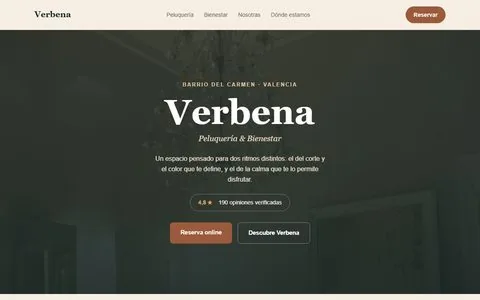
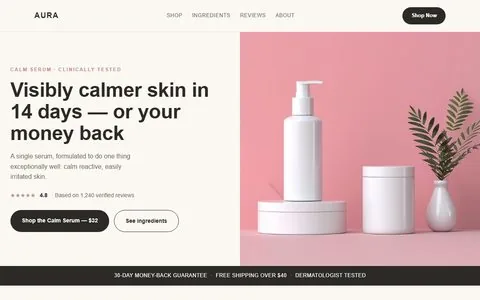
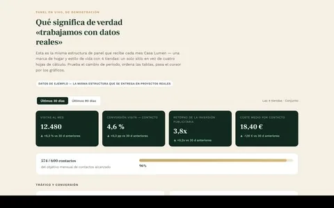
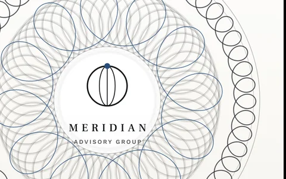
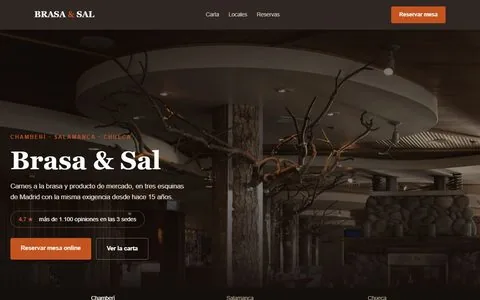
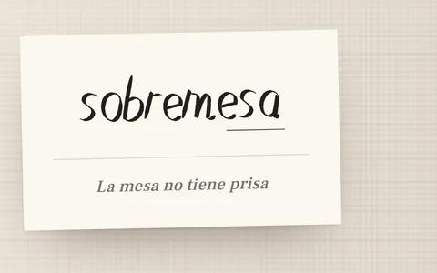

Tu web, tu ficha de Google, tu Instagram y tus reseñas, mirados desde fuera.
Tu web, tu ficha de Google, tu Instagram y tus reseñas, mirados desde fuera. Te lo contamos en 20 minutos. Gratis.
Rápida, con página por servicio y la reserva dentro. Sin banner de cookies, y midiendo desde el primer día.
Tu ficha de Google trabajando, las reseñas al día y contenido cada mes. Con un informe de números.
Los ocho canales, no solo la web. Con un plan priorizado: qué se hace primero, quién y cuándo.
Qué necesita el negocio.
Dónde está hoy, canal por canal.
Qué se hace primero y por qué.
Cómo se ejecuta y cómo se mide.
Mes a mes.






Ver el portfolio completo (6 casos) → Los tres niveles de web, con demos que funcionan →
Para el que necesita existir bien y que le encuentren.
Para el que tiene carta, servicios o tarifas.
Para el que quiere que la web le traiga clientes.
Antes de nada, la Foto del Día 0 — gratis
Miramos tu web, tu ficha de Google, tu Instagram y tus reseñas desde fuera, y te lo contamos en 20 minutos.
Pídela¿Prefieres el mapa entero antes de decidir?
El Diagnóstico + Plan son los ocho canales auditados y un plan priorizado, con responsable y fecha por acción.
690 €Que tu ficha y tus reseñas no se queden atrás.
Que además haya algo nuevo cada semana.
Que no tengas que acordarte de nada.
Precios sin IVA · los servicios mensuales tienen permanencia de 3 meses y después se cancelan avisando con 30 días.
Dinos qué negocio tienes y dónde está. Lo miramos como lo ve alguien que aún no te conoce.
Gratis y sin compromiso. Preferimos empezar enseñando algo, no pidiéndolo.
Pedir mi Foto del Día 0 →Sin accesos. Sin compromiso. Respondemos en dos días laborables. No te apuntamos a ninguna lista.